Find the output voltage  for each of the two circuits shown in the
figure below, using the line at the bottom as the reference (ground).
Assume the voltage drop across a diode is 0.7 V when it is forward
biased.
for each of the two circuits shown in the
figure below, using the line at the bottom as the reference (ground).
Assume the voltage drop across a diode is 0.7 V when it is forward
biased.
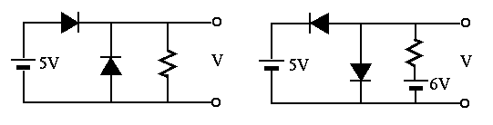
The circuit below shows a simple means for obtaining improved bias stability of the DC operating point of the transistor. As always, assume 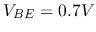 when answering the following questions.
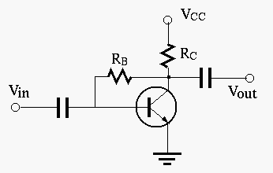
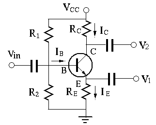
The circuit shown below is a silicon transistor amplifier which takes one
input and generates two outputs. Assume 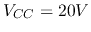, 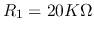,
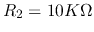,
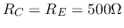,  .
.
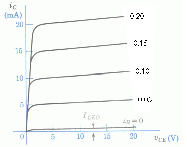 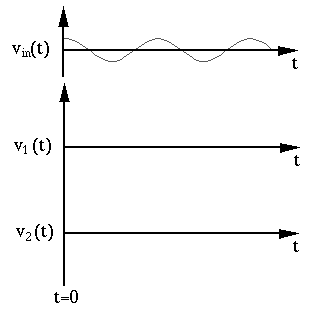
Solution:
Apply Thevenin theorem to base circuit to get
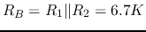, 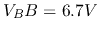.
Solution: